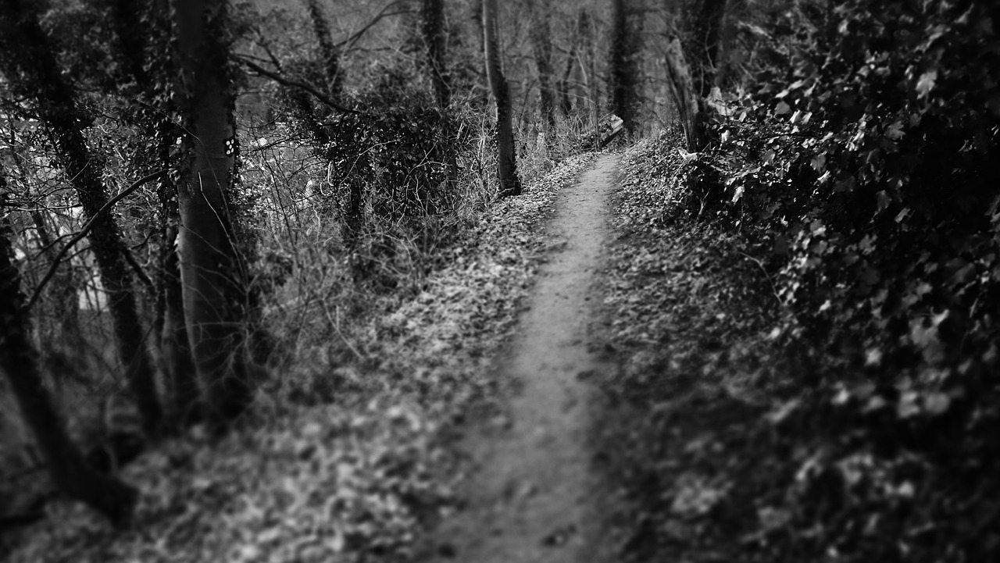

Prologo: La strada abbandonata
Questa è la storia di Christian Bartolomeo Junior IV che si trovava in in una strada abbandonata e aveva davanti a sè due possibilità per la notte:

Questa è la storia di Christian Bartolomeo Junior IV che si trovava in in una strada abbandonata e aveva davanti a sè due possibilità per la notte: